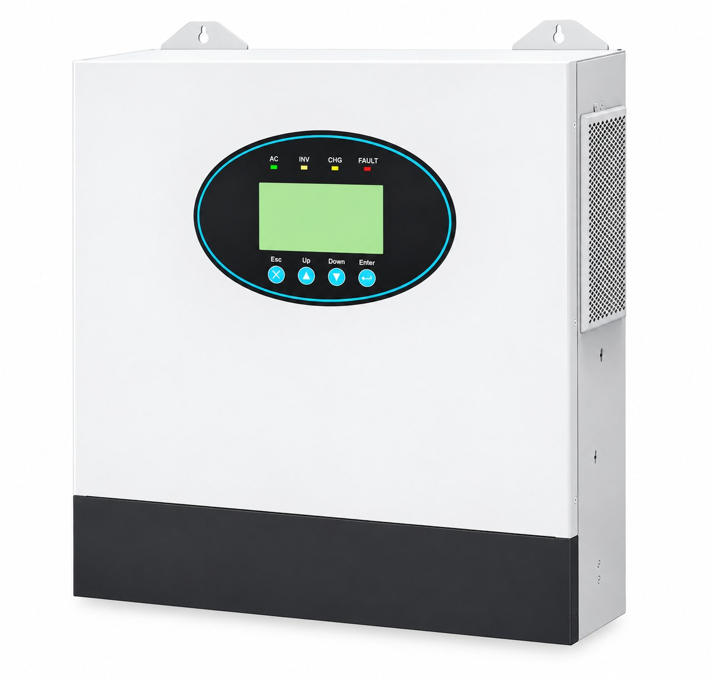

An integrated solar storage system combines solar generation, a hybrid inverter, battery storage, monitoring and installation documentation into one coordinated project. For B2B buyers, the value is not only the equipment: the system must match the load, operating pattern, grid conditions and backup requirement of the final site.
Start with a load audit and daily energy requirement, then size the battery, inverter and solar array around the project. An integrated system is usually the right choice when the site needs more capacity, longer runtime or more complex control than a portable power station can provide.

An integrated solar and storage system coordinates several components so they work as one energy system. Solar panels generate electricity during the day. A hybrid inverter manages solar input, grid supply, battery charging and output to the building. LiFePO4 batteries store energy for night-time or grid outages, and monitoring shows how the system is performing.
This differs from buying separate components from unrelated suppliers. In an integrated project, the inverter voltage range, battery communication, solar input, protection devices and load profile are checked together before supply. That reduces compatibility problems and makes commissioning easier for the installer.
List each appliance with its running watts, starting watts and daily operating hours. Separate essential loads from optional loads. A system designed to carry a refrigerator, pump and several rooms needs a different inverter and battery profile from one that only supports lighting, communications and a few small devices.
Multiply power by operating hours and add the daily results together. Include an efficiency margin for inverter losses, battery conversion and ageing. For commercial projects, also review weekly operating patterns, peak periods and seasonal changes.
The inverter and protection system must handle normal and starting current. Motors, compressors, pumps and air-conditioning can draw a high surge even when their continuous rating looks modest. Sizing by battery capacity alone can lead to shutdowns.
Decide how many hours or days the critical loads must continue during an outage. A villa may need several hours of evening backup; a clinic, telecom site or commercial operation may need longer autonomy. Battery capacity should also allow for temperature, depth of discharge and future expansion.
The solar array must cover daytime consumption and recharge the battery. Roof shading, panel angle, dust, high temperatures and seasonal weather all reduce real output. For sites with unreliable grid power, the solar-to-battery ratio should be checked carefully rather than copied from another project.
| Application | Typical components | Primary goal |
|---|---|---|
| Villa or residential | 5-20 kWh battery, 5-12 kW hybrid inverter, rooftop solar | Backup for lighting, communications, cooling and essential appliances |
| Commercial or industrial | 30 kWh to 1 MWh+, three-phase inverter, scalable batteries | Peak shaving, generator reduction and operational continuity |
| Off-grid site | Larger battery bank, solar array, generator integration | Independent power where the grid is unavailable or unreliable |
The first mistake is selecting the battery before calculating the load. The second is ignoring starting current. The third is underestimating the effect of heat, dust and shading on solar output. The fourth is failing to plan for future loads, which forces the customer to replace equipment earlier than expected.
Another common problem is mixing components without confirming communication and voltage compatibility. A lower purchase price can disappear quickly if the installer spends extra days resolving fault codes, adding adapters or replacing an inverter that cannot communicate with the battery.
SunVolt supplies integrated solar storage solutions for villas, commercial buildings and off-grid sites. We can review the load, propose the equipment list and prepare a quotation for distributors, EPC teams and project buyers. Review the portable and battery product range or the B2B wholesale program for the next step.
Solar panels, a hybrid inverter, LiFePO4 batteries, racking or mounting, protection equipment, monitoring and installation documentation. The final list depends on the project design.
Start with a load audit, daily energy consumption and peak demand. Then calculate battery autonomy, inverter capacity and solar array requirements.
Yes. Commercial systems can scale from tens of kilowatt-hours to more than one megawatt-hour and coordinate solar, batteries, grid and generator input.
Component compatibility, certificates, warranty, transport documentation, equipment list, installation guidance and after-sales support.
Send the load list, backup hours, installation country and site photos. SunVolt will review the project and recommend a suitable integrated solar storage system with a clear equipment list and quotation.
Discuss Your Project on WhatsAppSend your load list and installation details. We will recommend the inverter, battery and solar capacity for your project.
Request a Project Quote